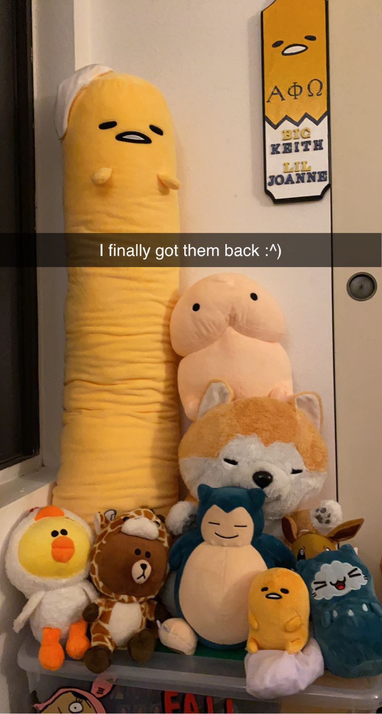

Keith's Life
Thursday (4/8)
Highlights
- Had some ramen for breakfast
- Took small breaks throughout the day to watch Youtube videos
Lowlights
- Waited till 10PM to eat dinner with my housemate
List of things needed to be done
- Attend CSE 101 Lecture
- Attend CSE 110 Lecture
- Study for CSE 101 Quiz
- Study for Math 103B Quiz
- Finish Math 103B Homework
Paragraph to Vent
I feel like every once in a while I get sad that I feel like I haven’t been doing as much as I should be. I ended up applying to 30 more internships today because I was scared that I wasn’t trying my hardest to get one for this summer, but I think it’s already too late. I’ve been applying since winter break but I think that was also too late. My friends told me to apply in the fall but I was taking 5 classes and I was trying to balance all of those so I spent most of my time on classes. I switched into the major in my 2nd year spring quarter and I feel like I’m so behind compared to everyone else. I wish I changed into this major in my 1st year instead of wasting time trying to apply to be an Electrical Engineer.
My Stuffed Animals
IU - Lilac
This is one of my favorite songs that I've been listening to on repeat for hours IU - Lilac Performance
Friday (4/9)
Highlights
- Downloaded and started playing Wild Rift
- Watched some DisguisedToast and Pokimane Youtube videos
- Got some McDonalds
Lowlights
- Math 103B Quiz
- CSE 101 Quiz
List of things needed to be done
- Attend Math 103B Lecture
- Take Math 103B Quiz
- Attend COGS 101A Lecture
- Study for CSE 101 Quiz
- Take CSE 101 Quiz
Paragraph to Vent
After taking that CSE 101 quiz, I think I underestimated the class. The homework and lectures seem so trivial compared to the quiz. I feel like I understand most of it and then end up making a simple mistake that causes me 15% on the quiz ): I really do need to triple check my work before I submit it. Also, I think I might change my Math 103B class to P/NP since that quiz was kinda rough. I thought that I would know a little more since I took Math 100B last quarter for 3 weeks before dropping it. When I compare my Math 100B class to this Math 103B class, it seems so much easier, but for some reason, I still don’t understand some of it :/
Wild Rift
Dreamcatcher - BOCA
This is another one of my favorite songs that I can listen to on repeat for hoursSaturday (4/9)
Highlights
- Sizzing Pot King for lunch
- Played Wild Rift with my high school friends
- Got a 7 win streak on Wild Rift
Lowlights
- Lost a few games due to poor performing teammates
List of things needed to be done
- Nothing really
Paragraph to Vent
I’ve played League of Legends before so Wild Rift seems pretty easy to me. Sometimes when I play, I don’t really take it seriously because I can’t tell if my opponents know how to play or not. I also don’t try as hard because I think it’s funny when I make a mistake and end up dying to them. Maybe I’ll start ranking in Wild Rift and I’ll get to diamond like I am on League :^)
My Favorite Wild Rift Champion